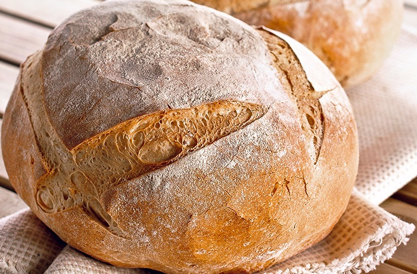
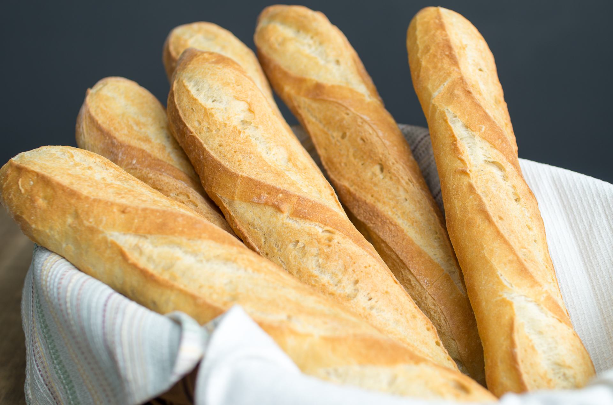
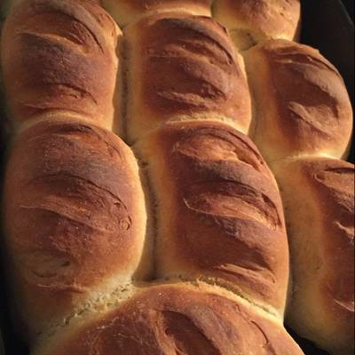
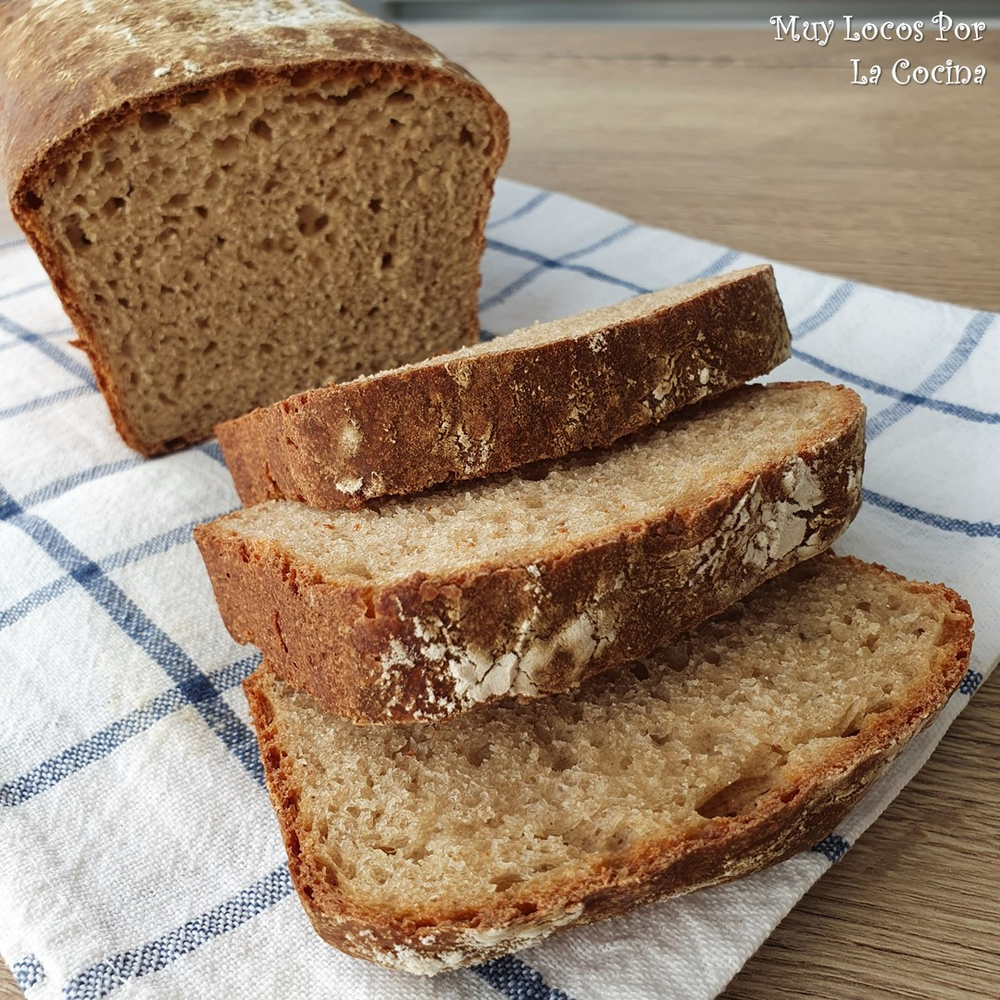

Este es un video sobre cómo se hacen los diferentes tipos de panes que vendemos en nuestra tienda
El pan integral tiene mayores beneficios sobre la salud que los más convencionales por su aporte de fibra. Por esa misma razón contiene estos ingredientes:
-El salvado: la capa externa, donde hay una alta concentración de fibra.
-El germen: donde se pueden hallar la mayor cantidad de nutrientes, como proteína, grasas y minerales.
-El endospermo: es donde se concentra el almidón y por ende la mayor cantidad de glucosa.
2€
Nos encontramos con un pan que reúne todas las características de la familia Tradición:
Corteza extra crujiente, mayor durabilidad, mejor sabor y color más intenso. También con un pan muy atractivo,
gracias al original dibujo de su superficie en forma de espiga, y a su corteza dorada y enharinada.
Como en todos nuestros productos de panadería.
 Comprar
Comprar
1€
Uno de los elementos diferenciadores de nuestro pan el por el origen de la harina. Toda la harina tiene que ser de trigo blando, libre de todo tipo de aditivos y elementos químicos y al menos el 25 por ciento ha de proceder de trigo del país o trigo gallego, cultivado en Galicia.
 Comprar1,50€
El pan en Francia es mucho más que un alimento, es un emblema, es una tradición y un ingrediente básico en cualquier menú de la cocina francesa, desde el más humilde hasta el más sofisticado. Está presente en prácticamente todas las comidas y cocinas y tiene un papel muy relevante en los grandes restaurantes Michelin del país.
 Comprar1€
Redondo, de color tostado y de aspecto rústico. Todo el mundo conoce las características básicas de este producto tan tradicional. Para conservar la tradición, hemos querido conservar la forma tradicional de elaborar este pan, que contiene tanta historia.
 Comprar1,20€
El pan de centeno, también conocido como pan negro, es un pan oscuro de miga más densa y pesada, esto es motivado al bajo contenido de gluten lo que dificulta el levado de la masa, su historia se remonta desde el paleolítico, ya en terrenos cercanos a Siria se tienen rastros del uso de este cereal en la edad antigua.
 Comprar2€